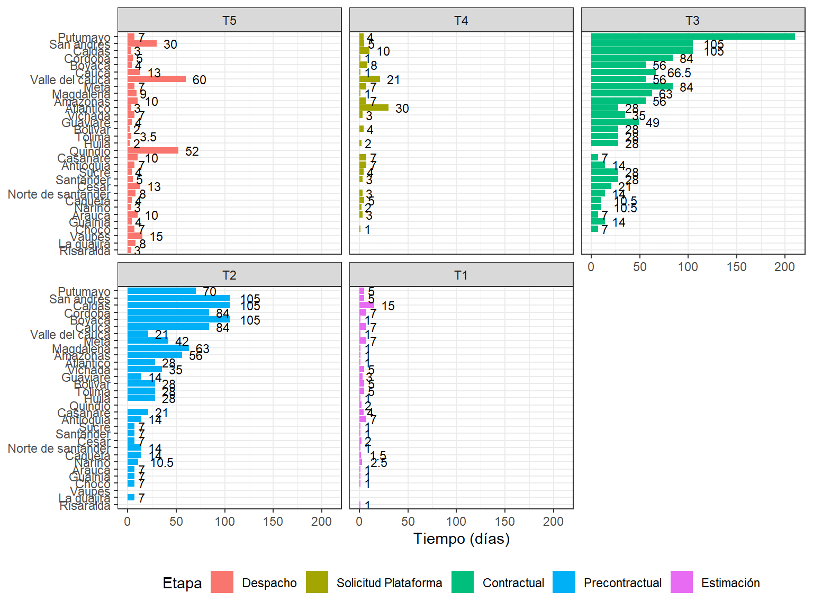
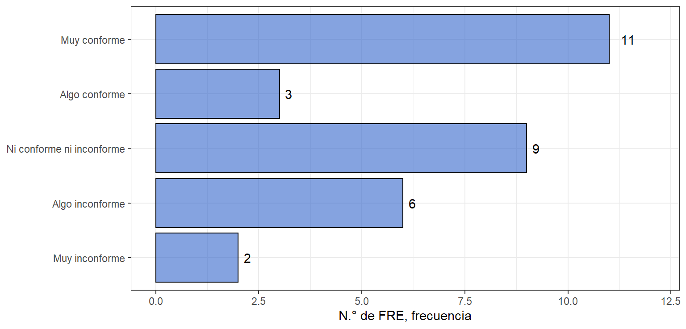
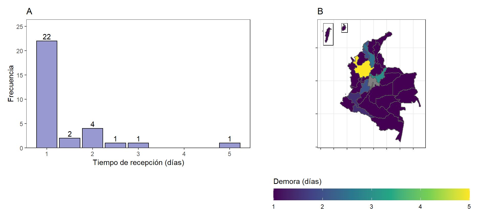
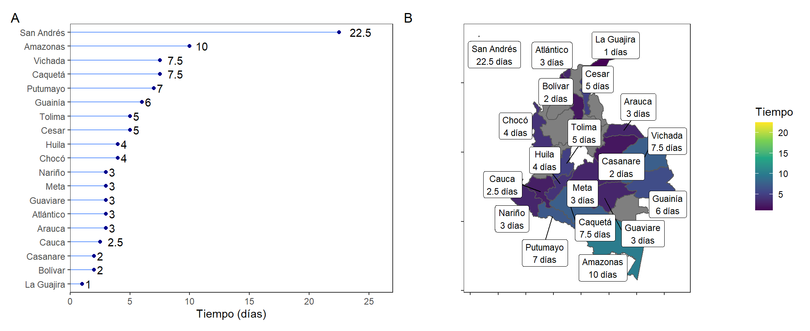

6.2 Adquisición de MME
6.2.1 Tiempos de demora en el proceso de adquisición
El tiempo de demora para reabastecimiento (\(L\)) es el tiempo que pasa desde el momento en el que se decide generar un pedido hasta que está físicamente listo en el almacén para satisfacer la demanda de los clientes29. Para un manejo adecuado del inventario, se debe tener en cuenta este tiempo para realizar los pedidos con anticipación de manera que no se produzcan desabastecimientos de forma frecuente.
Los tiempos de demora suelen tener varios componentes, en el diseño de la encuesta se tuvo en cuenta un proceso de adquisición de MME mediante etapas, de forma general se consideraron cinco etapas del proceso:
Estimación de necesidades
Precontractual
Contractual
Solicitud en la plataforma tecnológica
Despacho (tiempo de tránsito)
En este caso la plataforma tecnológica es la tienda virtual del Estado Colombia Compra Eficiente. El proceso puede cambiar de acuerdo con las particularidades de cada territorio, y el tiempo de demora para llevar a cabo estos procesos puede ser fijo o aleatorio.
En la Figura 6.4 se muestran los departamentos en órden de acuerdo al tiempo total para la adquisición de MME. Se tiene que los departamentos de Putumayo (296 días), San Andrés (250 días), Caldas (238 días), Córdoba (181 días) y Boyacá (174 días) son los que más tiempo toman en los procesos de adquisición. Se tiene un promedio entre todos los departamentos de 90.9 días para el cumplimiento del proceso de adquisición.
Figura 6.4: Demoras en el proceso de adquisición por departamento.
La diferencia en los tiempos para llevar a cabo los procesos de adquisición de MME (mostrados en la Figura 6.4) se puede explicar teniendo en cuenta factores como: (i) cantidad de medicamentos requeridos en cada departamento, (ii) herramientas usadas para el cálculo de la estimación de la necesidad, (iii) eficiencia u organización de los procesos contractuales de cada entidad y (iv) distancia física entre el FNE y la oficina del FRE. Este último factor puede afectar el tiempo de despacho de los MME de forma especial en las zonas más alejadas de la capital del país.
El proceso de estimación de compra de MME es uno de los más cortos (en promedio 3.31 días) y por lo general se hace teniendo en cuenta el consumo histórico en el territorio. El consumo histórico de medicamentos no es el único factor para tener en cuenta, es así como en el departamento de Casanare, el FRE además de revisar sus consumos históricos, consulta a sus inscritos la proyección de consumo de cada inscrito, adicionalmente agrega un 20% a su proyección final para tener un inventario de seguridad que le permita evitar el desabastecimiento.
Por otra parte hay territorios como Guaviare en el que la estimación de compra sólo se hace teniendo en cuenta el consumo histórico y cuidando de no sobrepasar el presupuesto que la gobernación ha asignado para esta tarea. El FRE de Guaviare en comparación con otros territorios es pequeño, evidenciando que las necesidades y capacidades de los FRE son diferentes de acuerdo con el territorio.
Existen casos a exaltar como el FRE de Sucre que, a pesar de tener un tamaño relativamente pequeño a otros en la región, tiene un proceso de estimación de necesidades de MME está altamente estandarizado a través de una herramienta que facilita la toma de decisiones de compra de MME. El FRE afirma que el uso de este manual reduce el tiempo de estimación de compra a una semana, y esto indica que es un proceso eficiente en este departamento.
Como se identifica en la Figura 6.5, la gran mayoría de territorios manifiesta que las actividades que más tiempos requieren son las etapas precontractuales (en promedio 36.4 días) y contractuales (en promedio 46 días), esto debido a los requisitos que establece la contratación pública35,36. Para que una institución estatal pueda realizar una compra debe tener en cuenta la modalidad de contratación y los documentos exigidos en la misma, p.ej. los estudios previos en los que la entidad debe tener claridad sobre las especificaciones técnicas mínimas del servicio o bien a adquirir35. Por último, en la Figura 6.5 se muestra la mediana y el rango intercuartílico de los tiempos de cada etapa del proceso.
Figura 6.5: Histogramas de tiempos en el proceso de adquisición por departamento. Línea negra segmentada mediana, líneas grises segmentadas primer y tercer cuartil.
Por lo general, la documentación pertinente de la fase precontractual es revisada y corregida en varias ocasiones por diferentes áreas en una misma entidad, lo que conlleva a largos tiempos de espera en la fase precontractual. Estas demoras se dan especialmente cuando el área encargada de aprobar la documentación o de llevar a cabo el proceso contractual no pertenece a la secretaría de salud, como es el caso de Atlántico, pues los funcionarios de otras áreas de las gobernaciones no están inmersos en el contexto de las necesidades de salud pública y específicamente en la importancia que tiene el abastecimiento de MME para la población, por lo que muchas veces el proceso de adquisición de medicamentos queda a merced de la voluntad de otras áreas, propiciando incluso el desabastecimiento en los departamentos.
La etapa de solicitud en la plataforma tecnológica toma en promedio 6 días (mediana de 4 días). Los departamentos que reportan las mayores demoras en esta etapa son Atlántico (30 días) y Valle del Cauca (21 días), estos departamentos describieron problemas durante el proceso de compra mediante la plataforma. El resto de departamentos presentaban tiempos menores a 7 días para esta etapa.
La etapa de despacho tomó en promedio 10.4 días (mediana de 7 días). Los departamentos de Valle del Cauca (60 días), Quindío (52 días), y San Andrés (30 días) presentaron la mayor demora en esta etapa, estos tiempos reportados no parecen tener una relación cercana con la distancia física entre la oficina del FRE y el centro de despacho desde el FNE.
Los procesos relacionados a medicamentos esenciales como los son muchos MME no deben tener barreras que aumenten el riesgo de desabastecimientos37, estas barreras pueden estar relacionadas con los tiempos de demora. De acuerdo con lo evaluado se tiene que las etapas precontractuales y contractuales son las que más toman tiempo.
Los FRE deben propender por sensibilizar más a sus gobernaciones para que los procesos se realicen en tiempos más prudentes. Es deber de todos los actores relacionados a los procesos de medicamentos garantizar el acceso a los mismos por parte de la población, acorde a las políticas implementadas por el gobierno nacional38.
6.2.2 Plataforma de compra estatal
La plataforma Colombia Compra es el ente rector en materia de contratación pública y desde 2013 se puso en marcha la tienda virtual del Estado colombiano como herramienta en línea del sistema de compra pública. Esta plataforma permite hacer compras a través de acuerdos marco, instrumentos de agregación de demanda y catálogo de bienes de las grandes superficies. En concordancia con lo anterior, Colombia Compra Eficiente dispuso un documento en su plataforma denominado “Estudios y Documentos Previos de la contratación con el Fondo Nacional de Estupefacientes para la adquisición de Medicamentos de Control Especial de Monopolio del Estado” donde afirma que se promueve un Instrumento de Agregación de Demanda de Precios para la adquisición de MME mediante contratación directa con el FNE, con el objetivo de aumentar la eficiencia en los procesos de cada FRE y aprovechar las economías a escala. Pese a su implementación y sus objetivos algunos FRE no perciben su uso como una ventaja.
De esta manera los FRE adquieren los MME a través de esta herramienta, por tal motivo se indagó sobre el uso de la plataforma y la opinión que tenían los FRE sobre la misma. Se encuentra que en términos generales (ver la Figura 6.5), que los FRE consideran que el tiempo invertido en el uso y trámite que se realiza a través de la plataforma, no es tan dispendioso como las etapas precontractuales y contractuales del proceso.
La mayoría de los departamentos hace uso de esta plataforma, encontrándose diferentes percepciones sobre ella. Por ejemplo, el FRE del Cauca indica alta satisfacción con el uso de la plataforma al considerar que es muy organizada, por otra parte el FRE del Valle del Cauca que indica inconformidad en el uso porque consideran que el mismo implica un extenso proceso precontractual y esto puede ser ineficiente y poco intuitivo. El FRE Meta afirma que en la plataforma existen factores que tardan en actualizarse como por ejemplo firmas de la secretaría de salud o incongruencias en el despacho de medicamentos comprados, y el FRE de Santander menciona que los precios en la plataforma suelen encontrarse desactualizados respecto a los del FNE.
Si bien el uso del Instrumento de Agregación de Demanda de precios dispuesto por Colombia Compra Eficiente para la adquisición de MME por parte de los FRE es de obligatoriedad, según la Circular Externa 005 de 2019 emitida por el FNE39, no todos llevan a cabo este proceso. Un caso podría ser el FRE Guainía que no ha utilizado la plataforma por falta de conocimiento sobre la misma y tiempo para capacitar a su personal respecto a ello, o el FRE Meta que expresa varias inconformidades sobre el uso de esta.
De otra parte, es necesario mencionar que, si bien casi todos los departamentos hacen uso de la plataforma, este proceso no siempre está a cargo del FRE, como en el caso del departamento del Atlántico, donde el proceso se lleva a través de Secretaría General y por ello su percepción sobre la misma es “ni conforme ni inconforme”. Es así como en la Figura 6.6 se identifica como la segunda respuesta más frecuente “Ni conforme ni inconforme” con el uso de esta plataforma. De otra parte, el FRE Putumayo comenta que el uso de la plataforma depende en gran medida de otras áreas de la gobernación, evidenciando varias dificultades en su uso y aumentando el tiempo en los procesos de contratación.
Figura 6.6: Opinión sobre la plataforma Colombia Compra Eficiente.
En algunos casos, los FRE manifestaron la necesidad de recibir capacitación sobre el uso de esta herramienta, pues el desconocimiento sobre la misma por parte del personal puede ocasionar demoras en el proceso de compra de MME. Por ejemplo, como ocurre en el caso del FRE Sucre que si bien tienen un método eficiente para realizar la estimación de compra, se ve retrasado en la etapa que implica el uso de esta plataforma.
Si bien la plataforma Colombia Compra Eficiente buscan hacer más eficiente el proceso de adquisición de bienes y servicios para entidades estatales se observa que en algunos territorios no hay adherencia al uso de la plataforma por desconocimiento de esta. Se recomienda que los FRE fortalezcan el conocimiento de uso de la plataforma.
6.2.3 Recepción de medicamentos
A nivel nacional se cuenta con el “Manual de condiciones esenciales y procedimientos del Servicio Farmacéutico” que está determinado por la Resolución 1403 del 200734 emitida por el INVIMA, que en el título “Recepción y Almacenamiento de Medicamentos y Dispositivos Médicos”, establece que la persona encargada de recibir los medicamentos en la institución debe realizar el siguiente procedimiento:
estudiar la documentación propia de la institución que realiza la recepción, con el fin de establecer los productos a recibir y qué condiciones requieren los mismos para su recepción.
verificar la documentación de quien hace la entrega, p.ej. guía de entrega. Las cantidades solicitadas deben corresponder con las aprobadas tras el pedido.
realizar una inspección de los medicamentos para verificar las (i) unidades, (ii) número de lote, (iii) fechas de vencimiento, (iv) registro sanitario, (v) laboratorio fabricante, (vi) condiciones de almacenamiento durante el transporte, (vii) manipulación, (viii) embalaje, (ix) material de empaque / envase y (x) condiciones administrativas y técnicas establecidas en la negociación.
Después de la inspección, se realiza un muestreo para determinar si los productos recibidos cumplen con especificaciones de calidad. Existen planes de muestreo de aceptación por atributos en el que se suele utilizar la Tabla Militar Estándar MIL-STD-105E40,41, con el fin de seleccionar el tamaño de una muestra aleatoria de acuerdo al tamaño total del pedido, nivel de inspección requerido y otros factores. En casos con un tamaño total de lote pequeño y altos niveles de inspección se suele realiza una inspección completa de los productos recibidos.
Al terminar la inspección se pasa a documentar la recepción y se procede a realizar un “acta de recepción” donde se detalla la información del procedimiento como:
fecha y hora de entrega
cantidad de unidades
número de lote
registro sanitario
fechas de vencimiento
condiciones de trasporte, manipulación y embalaje
material de empaque y envase
condiciones administrativas y técnicas establecidas en la negociación así como la trazabilidad
El acta es firmada por las persona que reciben y entregan para ser archivada. Como parte final se ingresan como parte del inventario a todos los productos pedidos que cumplan con las especificaciones de calidad.
En el caso de los distintos FRE a nivel nacional (ver Figura 6.7), se observa que el FRE Antioquia es el que más días invierte en realizar el proceso de recepción, esto se debe a que sus pedidos son de gran tamaño para cubrir la demanda, lo que conlleva a que deba dispensarse 5 días en todo el proceso de recepción técnica, desde el momento de recepción del producto proveniente del FNE, hasta el ingreso de la misma al sistema, incluyendo la realización del acta.
Figura 6.7: Tiempos en la recepción técnica y almacenamiento de MME. (A) Gráfico de barras con frecuencia. (B) Mapa con tiempos para la recepción técnica de MME.
En segundo lugar se encuentra el FRE Boyacá, el cual presenta un uso de 3 días en todo el proceso, se observa que el volumen de inscritos es alto y que en este caso lo llevan dos regentes de farmacia dando paso a la realización de acta con el transportador y luego una revisión completa de cada medicamentos y correcto almacenamiento con su acta correspondiente.
Como otro atributo que se puede resaltar en la Figura 6.7, es que cinco territorios Atlántico, Quindío, Sucre, Tolima y Bolívar se demoran entre 2-2.5 días para la recepción técnica, debido a su tamaño y a la cantidad de personas disponibles para llevar a cabo este proceso y como ultima observación, se puede ver que 24 de los 31 FRE realizan la recepción técnica durante un día y por máximo un día y medio, debido a que los pedidos realizados no son muy grandes, o como en el caso del Valle del cauca, Cauca y Santander, que son territorios grandes con bastantes inscritos, se determina la prioridad de esta acción donde se establece las personas que llevan a cabo este procedimiento y se ha observado que no sobrepasa un día y medio en esta labor.
6.2.4 Traslados interdepartamentales
La cadena de suministro de MME está planteada de manera que los FRE realizan compras de MME al FNE, y los establecimientos en los departamentos realizan compras al FRE, en ambos casos sin intermediaciones1. Sin embargo, existe un mecanismo conocido como traslado interdepartamental mediante el cual un departamento puede realizar la compra de MME a otro departamento. En logística, se le conoce a este tipo de transacciones como transbordos laterales29.
Los traslado interdepartamental/transbordos laterales en su modalidad reactiva se utilizan cuando existe un riesgo de desabastecimiento inminente y se hace un pedido de medicamentos al FRE de un departamento cercano42, esto puede reducir los costos sí se utiliza en emergencias, o aumentarlos sí se utiliza de forma excesiva29. Es importante mencionar que los traslados interdepartamentales sólo se pueden llevar a cabo previa autorización del FNE.
En el traslado interdepartamental de medicamentos se observa que los territorios más descentralizados son los que presentan mayor demora para recibir los traslados de MME, siendo los casos más demorados San Andrés y Amazonas. Como se observa en la Figura 6.8 las regiones más afectadas son Amazonía, Orinoquía, Pacífico a excepción del Valle del Cauca y algunos departamentos del Caribe. Sin embargo, el departamento que más demora presenta es San Andrés, pues al estar alejado de la zona continental del país, tiene un tiempo de traslado de medicamentos más largo.
Figura 6.8: Caracterización en demoras de traslados interdepartamentales. (A) Gráfico de tiempos de traslados interdepartamentales reportados para los departamentos. (B) Mapa de tiempos de traslados interdepartamentales.
